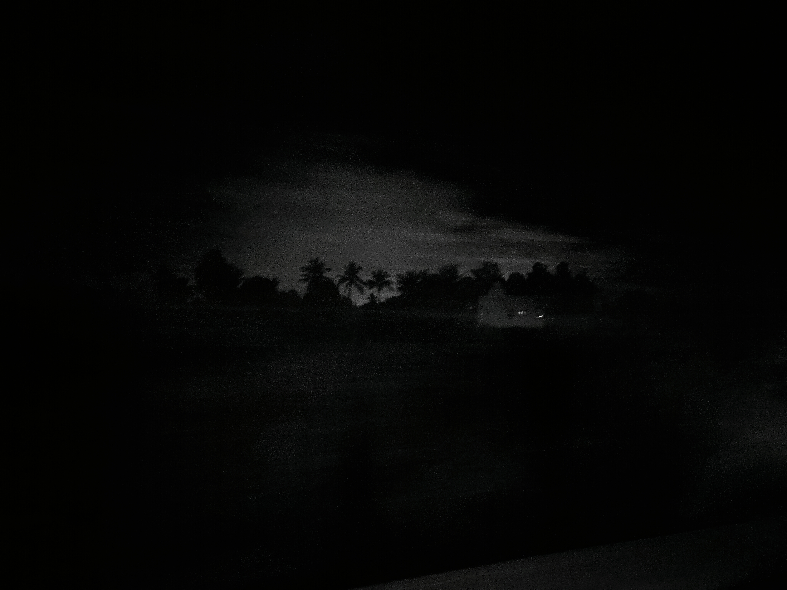
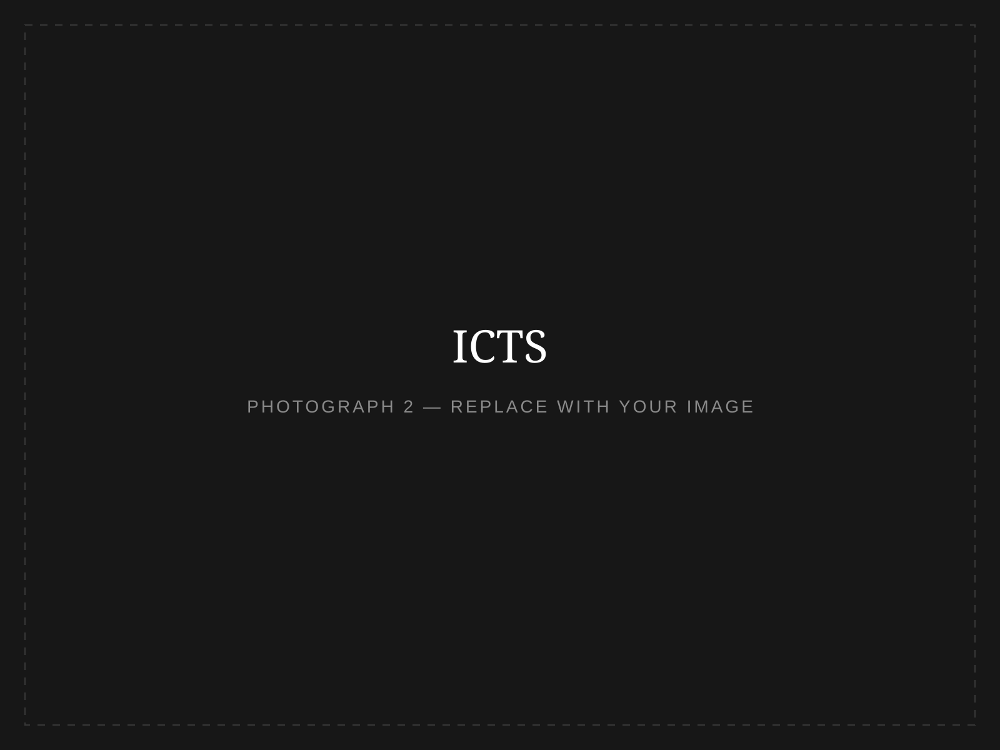

Skip to content
JM STUDIO
Projects
About
All projects
International Centre for Theoretical Sciences

Placeholder — first ICTS photograph

Placeholder — second ICTS photograph
See every photograph from the series.
View the full ICTS archive
CONTINUE EXPLORING
Studies of natural history